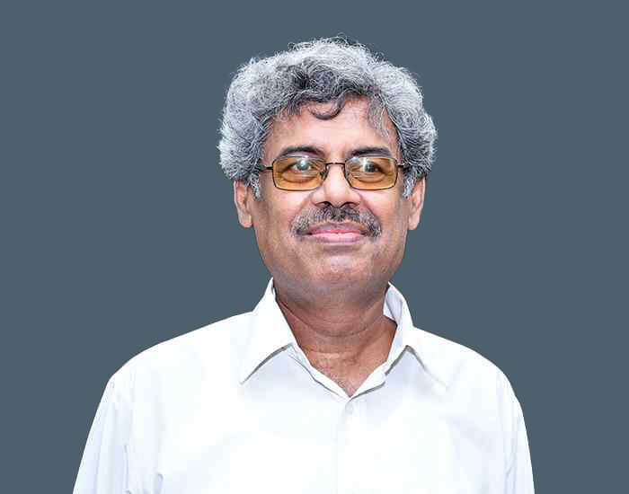

Collaborators
Dr. E. V. Gijo
Faculty member in the Statistical Quality Control and Operations Research Division at the Indian Statistical Institute since October 1997, actively engaged in teaching, research, and industry collaboration. Research and practice interests include Lean Six Sigma, Statistical Quality Control, Reliability Engineering, Business Analytics, Process Excellence, and structured problem-solving methodologies.
Dr. Ayan Pal
PhD in Statistics from IIT Kanpur, and a senior of mine from Ramakrishna Mission Vidyapith, Purulia. His interests include Accelerated Life Testing, Cure Rate Model, Bayesian statistics, and competing risks models.
Dr. K. V. Viswakala
Collaborator on the lifetime performance index work for Weibull products under step-stress setups.

Prof. (DR.) Debasis Kundu
His areas of interest include Statistical Signal Processing, Non-Linear Regression, Survival Analysis, Generalized Exponential Distribution, and Statistical Computing.